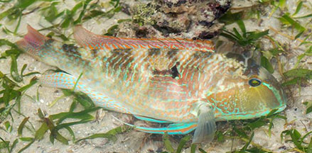

|
|
| fishes text index | photo index |
| Phylum Chordata > Subphylum Vertebrate > fishes > Family Labridae |
| Singapore
tuskfish Choerodon oligacanthus Family Labridae updated Sep 2020 Where seen? This large fish was seen at Cyrene Reef. Elsewhere, they are usually seen in sand-rubble next to coastal reefs, usually in turbulent water with muddy substrates. It is also called the White-patch tuskfish. Features: To 28cm. It has bluish stripes on the lower sides of its body and does NOT have a black spot on the middle of its dorsal fin. SeaLife Base describes it as: Recognized by the bright white patch that is highly visible in dirty water. Colour orange with light grey longitudinal stripes, a large bright yellow oval spot on side above lateral line and below anterior half of dorsal fin. |
 Cyrene Reef, Oct 17 Photo shared by Marcus Ng on facebook. |
| Human uses: It is sold fresh. |
Links
|